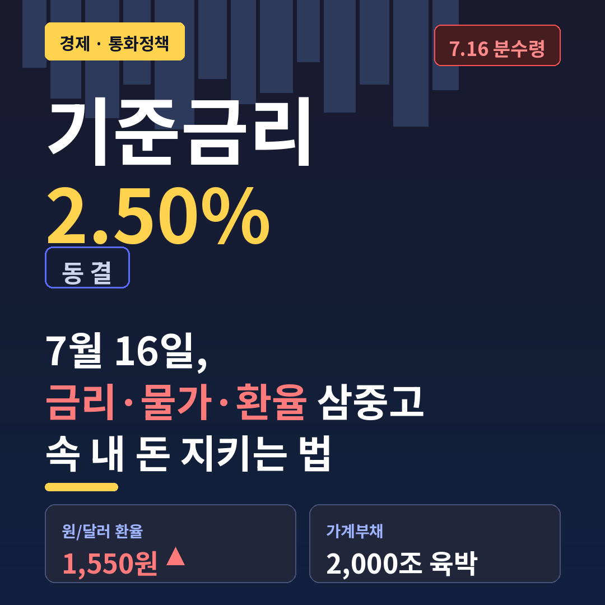
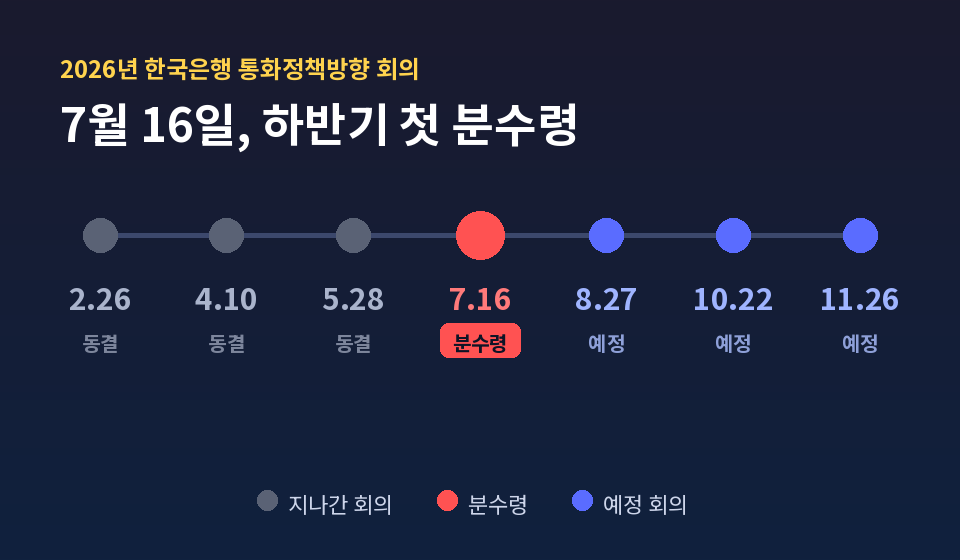
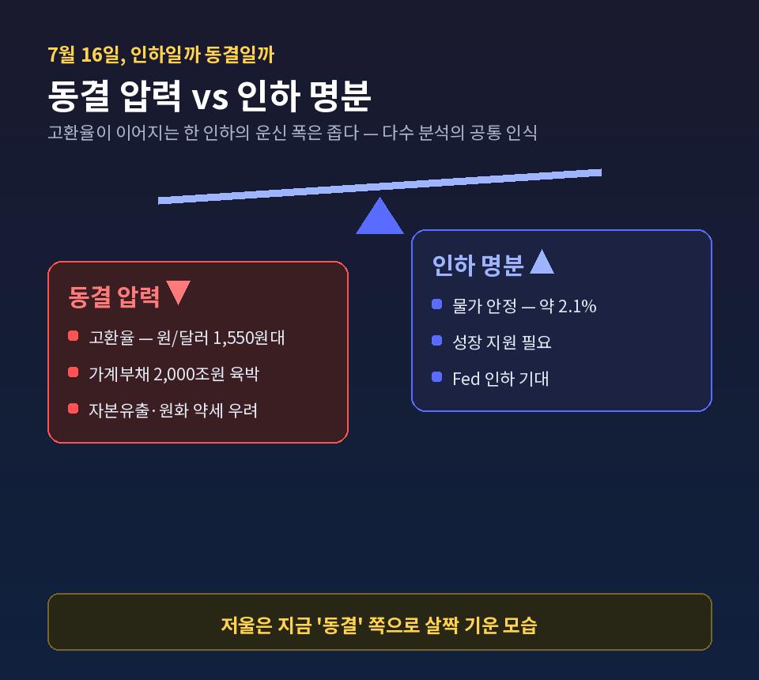
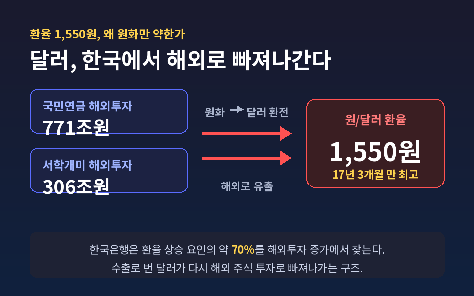
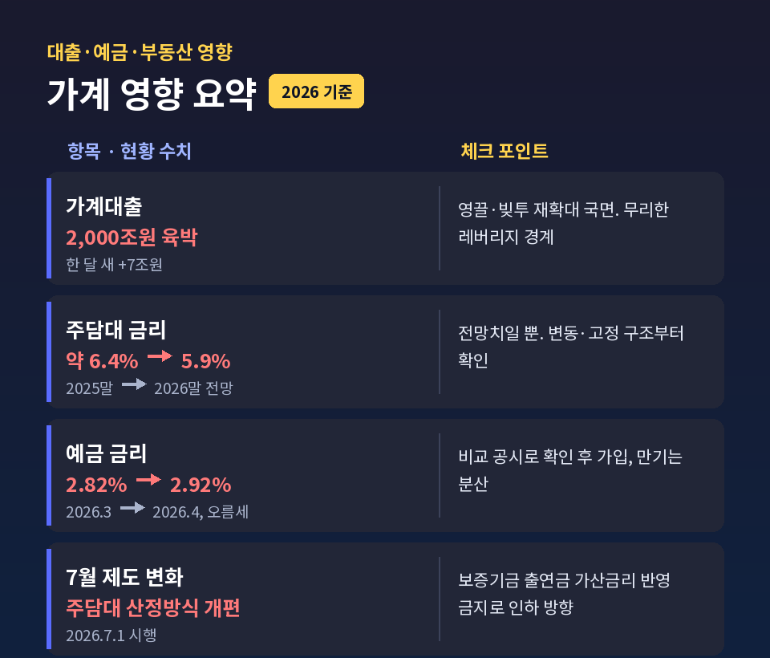

기준금리 동결 2026, 7월 분수령 — 금리·물가·환율 삼중고 속 내 돈 지키는 법

이번 글에서는 2026년 6월 현재의 기준금리 동결 상황을 정리해 보겠습니다.
먼저 핵심부터 짚겠습니다. 한국은행 기준금리는 연 2.50%로 동결돼 있고, 하반기 첫 분수령은 7월 16일 회의입니다. 환율은 1,550원대까지 올랐고, 물가와 가계부채도 함께 움직입니다. 이 세 가지가 맞물린 지금, 일반 가계가 점검할 원칙을 마지막에 정리해 드립니다.
지금 기준금리는 어디에 와 있나
현재 기준금리는 연 2.50%입니다.
한국은행은 2026년 들어 1월과 2월 회의에서 연속으로 동결해 이 수준을 지켜 왔습니다. 6월 현재까지 2.50% 동결 기조가 이어지고 있습니다.
하반기 통화정책방향 회의는 7월 16일, 8월 27일, 10월 22일, 11월 26일로 예정돼 있습니다. 그중 가장 먼저 오는 7월 16일이 시장이 주목하는 분수령입니다.
한국은행의 현재 입장은 비교적 분명합니다. "당분간은 성장 회복을 지원하되, 물가와 금융 안정 상황을 함께 살피겠다"는 기조입니다. 물가는 목표인 2% 근처에서 안정세이고, 성장은 소비와 수출 중심으로 개선되고 있다는 평가입니다.

7월 16일, 인하일까 동결일까
솔직히 말씀드리면, 7월의 방향을 한쪽으로 단정하는 신뢰할 만한 공식 전망은 아직 확인되지 않습니다.
그래서 한쪽으로 못 박기보다 양쪽 시나리오를 나란히 보는 편이 정직합니다.
먼저 동결(또는 매파) 쪽 논리입니다.
- 원/달러 환율이 1,550원대까지 치솟은 고환율. 금리를 내리면 한미 금리차가 더 벌어져 자본유출과 원화 약세를 자극할 수 있습니다.
- 가계부채가 2,000조원에 육박하는 금융 안정 리스크.
다음은 인하(비둘기) 쪽 논리입니다.
- 물가가 목표 수준 근처에서 안정세라는 점.
- 성장을 떠받칠 필요가 있다는 점.
- 미국 Fed가 인하 기조로 돌아서면 한미 금리차 부담이 완화된다는 점.
정리하면 7월 회의는 "성장 지원을 위한 인하"와 "환율·가계부채 방어를 위한 동결"이 팽팽히 맞서는 구도입니다. 다만 고환율이 이어지는 한 인하의 운신 폭은 좁다는 것이 다수 분석의 공통된 인식입니다.

환율 1,550원, 왜 원화만 약한가
환율 이야기를 따로 떼어 보겠습니다.
2026년 6월 8일, 서울 외환시장에서 원화 환율은 17년 3개월 만에 가장 높은 1,555.2원에 거래를 시작했습니다. 6월 5일에는 야간시장에서 급등해 1,562.47원을 기록하기도 했습니다.
흥미로운 점이 하나 있습니다. 국제적으로 달러가 특별히 강하지 않은데도 유독 원화만 약하다는 것입니다. 달러인덱스가 100 이하에 머무는데도 환율은 1,500원대로 올랐습니다. 글로벌 달러 강세만으로는 설명되지 않는다는 뜻입니다.
한국은행은 최근 환율 상승 요인의 약 70%를 해외투자 증가에서 찾습니다.
- 국민연금의 해외 투자 규모는 8월 말 기준 약 771조원으로, 한 해에만 70조원 넘게 늘었습니다. 원화를 대규모로 달러로 환전하면서 환율을 밀어 올립니다.
- 개인 해외투자자(서학개미)의 해외 투자 규모도 약 306조원에 달합니다.
예전엔 수출로 번 달러가 국내로 들어와 원화 강세를 이끌었습니다. 지금은 그 달러가 해외 주식 투자로 다시 빠져나가는 구조입니다.
여기에 한미 금리차도 작용합니다. 미국 기준금리 연 3.75~4.00%, 한국 2.50%로 격차가 최대 약 1.5%포인트입니다. 다만 시장 금리 격차는 비교적 작아 자금 유출 우려가 과장됐다는 시각도 함께 있습니다. 환율을 금리차 하나로만 설명하기는 어렵다는 이야기입니다.

물가와 성장은 어떻게 보나
수치부터 보겠습니다.
- 2026년 소비자물가 상승률 전망은 약 2.1%입니다. 목표인 2% 근처의 안정세라는 평가입니다.
- 2026년 경제성장률 전망은 약 2.5%입니다. 반도체 수출 호조와 소비 중심 내수 회복이 반영됐습니다.
다만 안심하기엔 변수가 하나 남습니다. 고환율입니다.
환율이 오래 1,400~1,500원대를 웃돌면 원유·곡물·에너지 같은 수입 원자재 가격을 끌어올립니다. 실제로 지난해 11월 수입물가지수는 전월 대비 2.6% 올라 5개월 연속 상승했다는 보도가 있었습니다. 물가 전망치가 안정적으로 보여도, 고환율이 위쪽 리스크로 작동하는 셈입니다.
대출·예금·부동산에는 어떤 영향이 오나
가계로 좁혀 보겠습니다.
대출 쪽 흐름입니다.
- 가계부채가 2,000조원에 육박하고 있습니다. 영끌·빚투가 다시 늘며 한 달 새 7조원이 확대되기도 했습니다.
- 은행권 주택담보대출 잔액은 5월 말 기준 약 940조 8,000억원으로, 전월 대비 3조 2,000억원 늘었습니다.
- 주담대 금리는 2025년 말 약 6.4%에서 2026년 말 약 5.9%로 내릴 것이라는 기관 전망이 있습니다. 어디까지나 전망치인 점은 감안하셔야 합니다.
여기에 7월이 대출자에게 분수령이 되는 또 하나의 이유가 있습니다. 2026년 7월 1일부터 주담대 금리 산정 방식이 바뀝니다. 기존에 가산금리에 포함되던 보증기금 출연금 등 법적 비용을 가산금리에 반영하는 것이 금지됩니다. 실질적으로 금리를 낮추는 방향의 변화로 기대됩니다.
예금 쪽도 살펴보겠습니다.
- 예금 금리는 오름세입니다. 2026년 3월 2.82%에서 4월 2.92%로 올랐습니다.
- 개별 상품·금리는 수시로 바뀌므로, 은행연합회 소비자포털과 금융감독원 '금융상품한눈에' 같은 비교 공시로 직접 확인하시는 편이 정확합니다.

그래서 내 돈은 어떻게 지키나
마지막은 가장 궁금하실 부분입니다. 특정 상품이나 종목을 추천하지는 않습니다. 일반 원칙만 담담히 정리하겠습니다.
첫째, 대출은 구조부터 점검합니다.
- 내 대출이 변동금리인지 고정금리인지 먼저 확인합니다. 변동금리는 시장금리가 오르면 이자 부담이 커집니다.
- 갈아타기를 검토한다면 중도상환수수료와 이자 절감액을 반드시 비교합니다. 무조건 갚거나 갈아타는 게 답은 아닙니다.
- 7월 1일 산정 방식 변경으로 신규·대환 시 조건이 달라질 수 있으니, 그 전후를 확인할 가치가 있습니다.
둘째, 예금은 비교하고 만기를 나눕니다.
- 금리가 오름세이므로 비교 공시로 확인한 뒤 가입합니다.
- 만기를 분산하면 금리 변동에 좀 더 유연하게 대응할 수 있습니다.
셋째, 환율은 분산의 관점으로 봅니다.
- 고환율이 '뉴노멀'이 될 수 있다는 전망과, 2026년 원화 강세 전환 전망이 함께 있습니다. 어느 한쪽에 베팅하기보다 통화·자산을 나눠 두는 관점이 안전합니다.
- 해외여행·유학처럼 달러를 쓸 예정이 있다면, 환전 시점을 한 번에 몰지 말고 나누는 것도 방법입니다.
넷째, 무리한 레버리지는 경계합니다.
- 가계부채가 불어나고 고환율로 금리 인하가 늦춰질 수 있는 국면입니다. 무리한 영끌·빚투는 신중히 접근하시길 권합니다.
여기 적은 내용은 일반적인 정보와 원칙입니다. 특정 상품·종목 추천이 아니며, 실제 결정은 본인 상황과 전문가 상담을 거쳐야 합니다.
끝으로 한 마디만 더 드리겠습니다.
7월의 방향은 누구도 단정하지 못합니다. 우리가 통제할 수 있는 건 금통위의 결정이 아니라 그 결정을 맞이하는 내 재무 구조입니다.
"방향은 못 정해도, 대비는 정할 수 있습니다."
7월 16일이 지난 뒤 후회하지 않으려면, 지금 내 대출과 예금과 통화 구성을 한 번 들여다보시는 건 어떨까요.